- 障がいや年齢にとらわれない
- 就労の場を全国に！
- 障がいや年齢に
- とらわれない
- 就労の場を全国に！
住み慣れた場所で一人ひとりの個性を活かす「就労支援」の運営、サポートを通じて全ての人が排除されることなく笑顔で暮らす社会を創ります
農福連携でこんなお悩みありませんか？
-
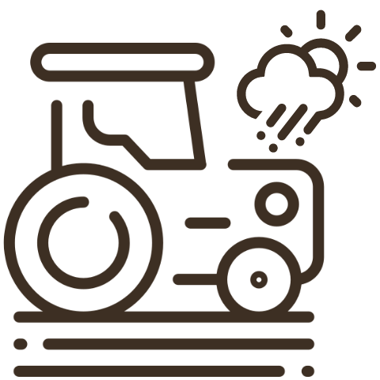
天候
天候や気温に左右されて思うように収穫ができない
-
身体への負担
身体への負担が大きく利用者さんに平等に作業をお願いできない
-
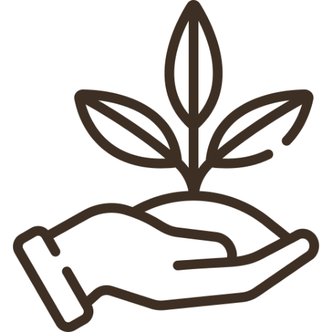
知識
農業に関する知識がない
-
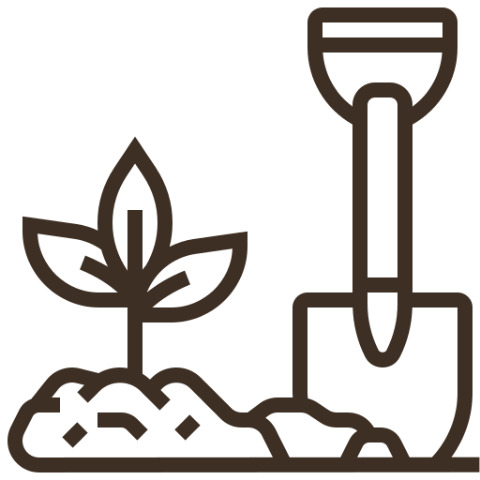
マニュアル化
マニュアル化されていない作業が多く、教えるのが難しい
-
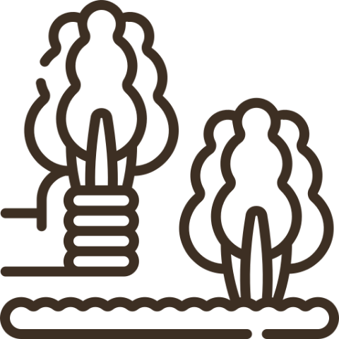
休日出勤
農繁期は職員さんが休日出勤をして収穫しなければいけない
-
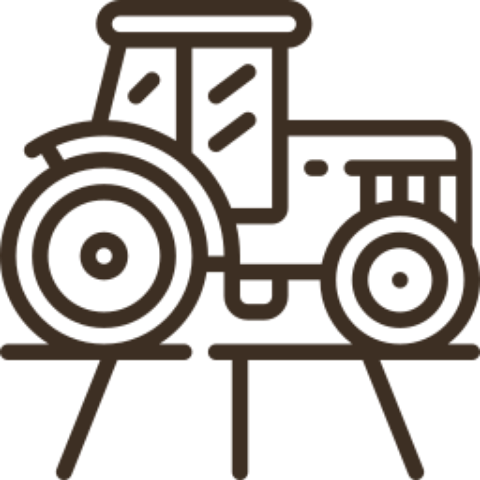
早朝作業
収穫時間帯が朝早い
これらは露地栽培型の農福連携を実践する事業者様にとってよくあるお悩みの一部です。
どうしたらもっと快適に効率よく、スムーズに農福連携が出来るか、
一緒に考えませんか？
新着情報
-
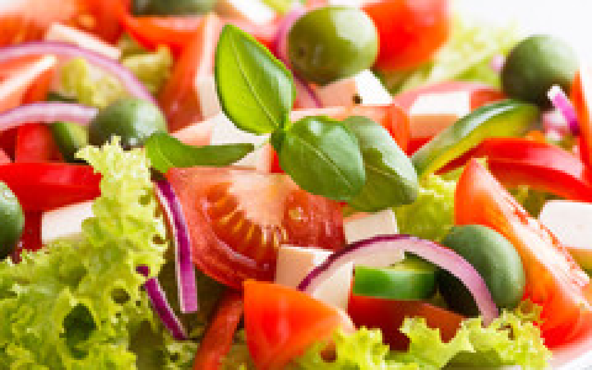 2022.12.10 タイトルタイトルタイトルタイトルタイトルタイトルタイトルタイトル
テキストテキストテキストテキストテキスト
イベント
テキストテキストテキストテキストテキストテキストテキストテキストテキスト -
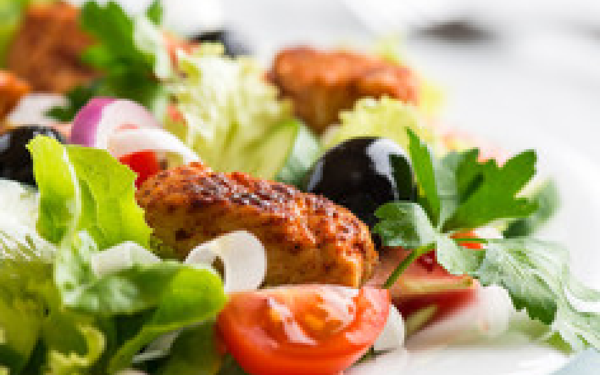 2022.12.10 タイトルタイトルタイトルタイトルタイトルタイトルタイトルタイトル
テキストテキストテキストテキストテキスト
導入実績
テキストテキストテキストテキストテキストテキストテキストテキストテキスト -
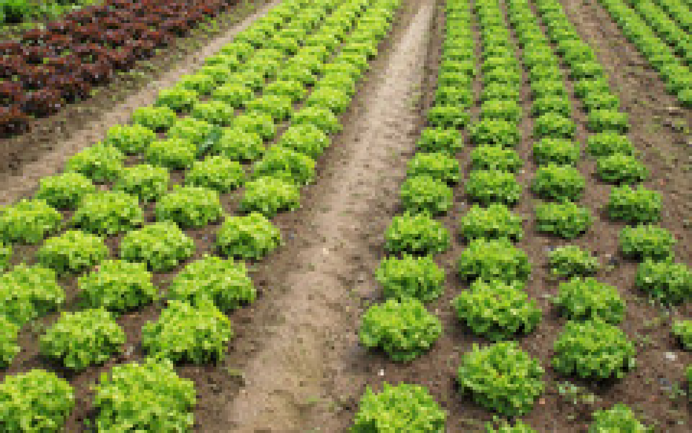 2022.12.10 タイトルタイトルタイトルタイトルタイトルタイトルタイトルタイトル
テキストテキストテキストテキストテキスト
イベント日程
テキストテキストテキストテキストテキストテキストテキストテキストテキスト
就労支援の立場から考える
露地栽培とノウフク道の違い
-
一般的な露地栽培の場合
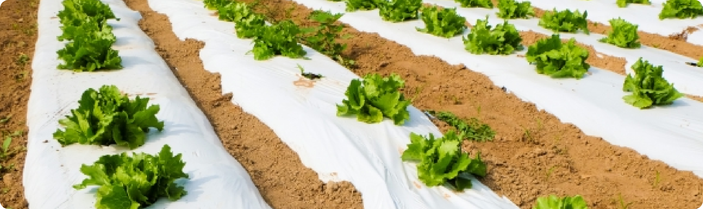- 種まきから収穫までの期間が不透明
- 一般的な目安はありますが、天候不良や災害など予期せぬアクシデントで作業計画通りに行かないことも多いそう。
- 重い荷物を運んだり、体力勝負
- 機械を使う場合も多いですが、まだまだ人の手でやることも多く農作業は重労働だと言われています。
- 時期によって栽培できる作物、そうでない作物がある
- 作物には旬と言われる美味しい時期がありますが、その期間は近隣の多くの農家さんが同じ作物を作ることで供給過多となり市場価格や卸値が下がる傾向にあります。
-
ノウフク道の場合
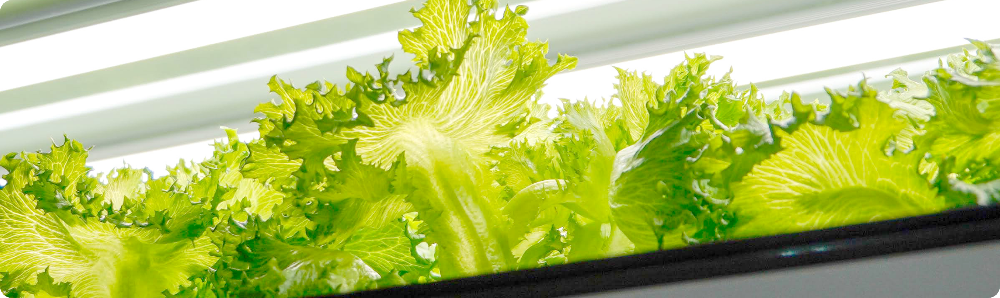- 種まきから収穫までは約35日
- 野菜の成長に欠かせない日照時間や養分を機械で管理する野菜工場では年間の生産計画が立てやすく、作業スケジュールやお休みも事前に決められます。
- 環境管理は年間通して自動で出来る
- 工場内の室温や湿度を始め、肥料や日光等ほとんどのことを自動的にシステムで管理をするため、良作不作が生まれづらく生産計画が安定しやすいです。
- 季節関係なく栽培することが出来る
- 野菜には気象条件などにより旬がありますが、生育環境を自動管理することで季節に関係なくお好きな品種を育てることができます。
飲食店向けのはずが意外な業界からの問い合わせが
小規模水耕栽培装置ノウフク道は、「ソーシャルキッチン」という商品名でレストランや飲食店、家庭で野菜を水耕栽培することを目的に開発したのですが実際の問い合わせや導入の相談のほとんどが福祉施設や就労支援に携わる企業からでした。
発売当初は私たちも戸惑い、相談くださったお客さまへ詳細なヒアリングを重ねていきました。
その中で、リアルな福祉現場の課題や事情をお聞きし、また自分たちでも社会福祉団体様や自治体の担当部署へのリサーチを行った結果水耕栽培と福祉の相性の良さを痛感したのです。
持続可能な農福連携の在り方とは
2016年「ニッポン一億総活躍プラン」の一環として、農福連携が推進されたことをきっかけに新規参入を検討する動きが活発になりました。
日本の農業と言えば、畑を耕す昔ながらの路地型農業が一般的なイメージであることもあり農福連携に参入される方の多くが露地栽培型農業を検討されるそうです。
しかしながら、昨今の気候変動や急激な社会情勢の変動に目配りし、作目選定から実際の作業や収穫を行うことが要求される等、昔に比べて高度な課題が増えてきました。
特に作業環境については、随分と自動化、機械化で改善された部分もありますが、まだまだ作業の一つ一つが勘や経験に頼る部分も少なくありません。
更に、天候や災害など予測不可能な現実、腰を曲げる、中腰の姿勢で長時間作業をする等の身体を痛めやすい根本的な部分の解消は難しい現実があります。
露地栽培型農業自体は大変やりがいのあるものですが、福祉施設や就労支援の利用者さんには身体に障がいのある方や体力に自信のない方が少なからずいらっしゃいます。
このような状況下ですから、露地栽培型農業での農福連携への参入には様々な課題がありなかなか進まない現実もうなづけます。
就労支援の立場から見た
ノウフク道の特徴
小規模水耕栽培装置「ノウフク道」を導入することで、路地栽培型農業の労働環境をはじめとする課題のほとんどが解消されるかもしれません。
季節を問わず安定した栽培が可能！
水耕栽培型の野菜工場では、植物の成長に必要不可欠な要素を専用の装置を使って自動管理するので季節を問わず通年で安定した栽培が可能です。また、作付けから次の作付けへの期間が露地栽培より短く、年間生産量が上がるので収量見込みもずれにくく収支計画も立てやすくなります。
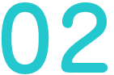経験が少なくても作業が出来る！
栽培方法や作業内容をマニュアル化しているため農業経験のない方や障がいをお持ちの方でも天候や寒暖差に左右されることなく安心して作業を行うことができます。
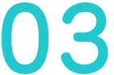連作障害を回避できる！
作物の種の植え付けにはスポンジを使用しています。肥料や養分は、液体肥料を使い、作物が根から吸収しています。その結果、土壌の成分バランスの不均衡や病害虫が土壌に残ることによっておきる連作障害を回避し、同じ作物を短いサイクルで続けて栽培することが可能です。
水耕栽培の導入には、装置の導入や工場建設などの初期費用がかかります。また、露地栽培型農業のように多種の野菜を作ることは現時点では難しい等今後改善が必要な点も多々あります。けれども、安全に快適にやりがいのある仕事に取り組む環境を整備するという面では老若男女、障がいの有無を問わず良いものを提供出来るものだと考えています。
水耕栽培の野菜って美味しいの⁉
水耕栽培で作った野菜は、美味しくない？
そんな噂を聞いたことがあるかもしれませんが、そんなことはありません。
特に葉物野菜に関しては、露地栽培の野菜と比べて柔らかく食べやすい上にえぐみが抑えられていて野菜嫌いの方も美味しく食べられるという声を沢山頂いています。また、きちんと管理された環境で生産しているため、洗わずに食べても問題ないという手軽さから飲食店様に使っていただくことも増えています。
ブランド化しています
-
商品名
NPO法人ソーシャルハウス
-
展開エリア
北関東（群馬県）
-
商品ラインナップ
リボンレタス、フリルレタス